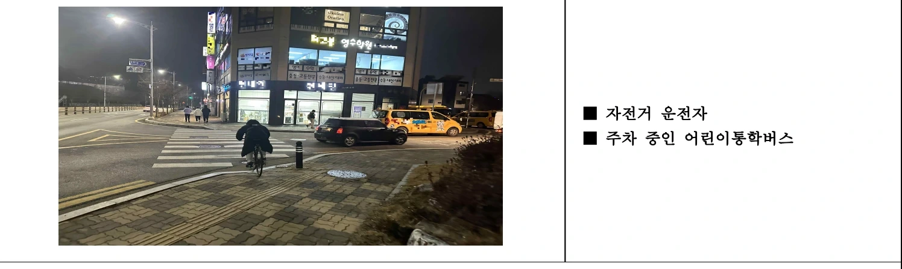

773. 다음 상황에서 가장 잘못된 운전방법 2가지는?

- ①자전거 운전자는 자전거를 타고 횡단보도를 통행할 수 있다.
- ②자전거 운전자가 어린이라면 보도를 통행할 수 있다.
- ③자전거 운전자는 안전모를 착용해야 한다.
- ④자전거 운전자는 밤에 도로를 통행하는 때에는 전조등과 미등을 켜거나 야광띠 등 발광장치를 착용하여야 한다.
- ⑤어린이통학버스는 어린이의 승하차 편의를 위해 도로의 좌측에 주차하거나 정차할 수 있다.
정답 보기
정답
① 자전거 운전자는 자전거를 타고 횡단보도를 통행할 수 있다.
⑤ 어린이통학버스는 어린이의 승하차 편의를 위해 도로의 좌측에 주차하거나 정차할 수 있다.
근거·해설
자전거등의 운전자는 자전거도로(제15조제1항에 따라 자전거만 통행할 수 있도록 설치된 전용차로를 포함한다. 이하 이 조에서 같다)가 따로 있는 곳에서는 그 자전거도로로 통행하여야 한다(도로교통법 제13조의2 제1항). 자전 거등의 운전자는 자전거도로가 설치되지 아니한 곳에서는 도로 우측 가장자리에 붙어서 통행하여야 한다(도로교 통법 제13조의2 제2항). 자전거등의 운전자는 제1항 및 제13조제1항에도 불구하고 어린이, 노인, 신체장애인에 해당하는 경우에는 보도를 통행할 수 있다. 이 경우 자전거등의 운전자는 보도 중앙으로부터 차도 쪽 또는 안전표지로 지정된 곳으로 서행하 여야 하며, 보행자의 통행에 방해가 될 때에는 일시정지하여야 한다(도로교통법 제13조의2 제4항 제1호). 자전거등의 운전자는 자전거도로 및 「도로법」에 따른 도로를 운전할 때에는 행정안전부령으로 정하는 인명보호 장구 를 착용하여야 하며, 동승자에게도 이를 착용하도록 하여야 한다(도로교통법 제50조 제4항). 자전거등의 운전자는 밤에 도로를 통행하는 때에는 전조등과 미등을 켜거나 야광띠 등 발광장치를 착용하여야 한다(도로교통법 제50조 제9항). 모든 차의 운전자는 도로에서 정차할 때에는 차도의 오른쪽 가장자리에 정차할 것(도로교통법 시행령 제11조 제1항 제1호).